Import geometrie PIAN pomocí CSV souboru
Definice formátu souboru pro import
Cílem níže popsaných postupů je vytvořit tabulku ve formátu CSV (Comma Separated Values, .csv), pomocí které lze importovat geometrie PIAN do AMČR. CSV soubor musí mít následující parametry:
- Základní formát (obvykle jde o výchozí nastavení pro CSV):
- kódování: UTF-8;
- oddělovač pole:
,(čárka – znak s UTF-8 kódem U+002C); - oddělovač řetězců:
"(horní uvozovky – znak s UTF-8 kódem U+0022).
- Soubor obsahuje následují pole:
label– pole s jedinečným popiskem prvku (např. identifikátor);epsg– pole obsahující kód souřadnicového systému – akceptovány jsou souřadnicové systémy 4326 (WGS 84) a 5514 (S-JTSK / Krovak East North);geometry– pole obsahují souřadnice ve formátu WKT (Well-known Text) podle typu geometrie:POINT(souřadnice WKT);LINESTRING(souřadnice WKT);POLYGON(souřadnice WKT).
Při nahrávání CSV souborů systém akceptuje i složené geometrie (MULTIPOINT, MULTILINESTRING, MULTIPOLYGON), ale je primárně určen pro validní jednoduché geometrie. Při použití multi* prvků dojde při importu k rozdělení na jednotlivé jednoduché geometrie, protože PIAN nikdy nemůže být ve formátu složené geometrie. Doporučujeme proto tyto typy geometrií nepoužívat, mohou však vznikat např. při vytvoření shapefile přes ESRI ArcGIS, přestože obsahem prvku je jednoduchá geometrie. V takovém případě bude obsah do AMČR importován správně.
Všechna textová pole v CSV vč. geometrií by měla být obalena oddělovačem textu ("), a to zejména kvůli správnému čtení čárky jako oddělovače údajů v rámci geometrií.
Vytvoření CSV souboru
Pomocí online převodníku SHP na CSV
- Otevřete online převodník https://www.km4city.org/wkt/.
- Tlačítkem
Procházet/Browsevyberte soubor s koncovkou .shp z připraveného shapefilu (SHP). - Do pole
Labelzvolte název výstupu. - Stiskněte tlačítko
Uploadpro nahrání souboru do převodníku.
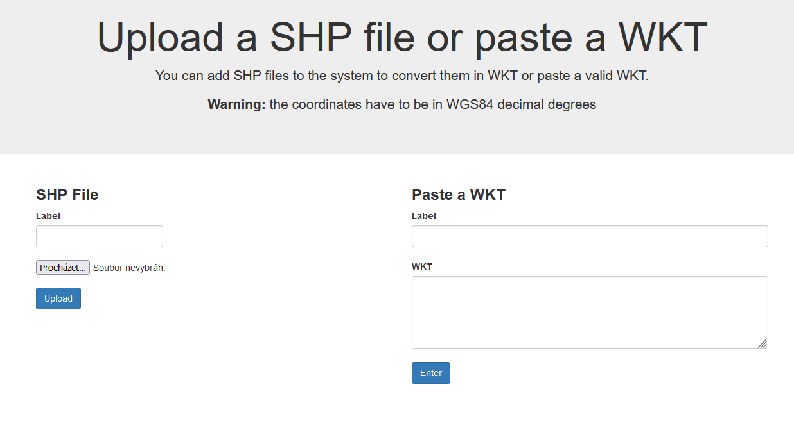
- Na následující obrazovce uvidíte převedené geometrie:
- v poli
namejsou uvedené názvy jednotlivých geometrií (PIAN) podle toho, jak byly pojmenované ve zdrojovém SHP; - v poli
WKTje pak geometrie PIAN ve formátu WKT; - po výběru geometrie zaškrtávacím políčkem je možné konkrétní geometrii/PIAN zobrazit na mapě pro ověření výběru (funguje pouze pro data v souřadnicovém systému WGS-84).
- v poli
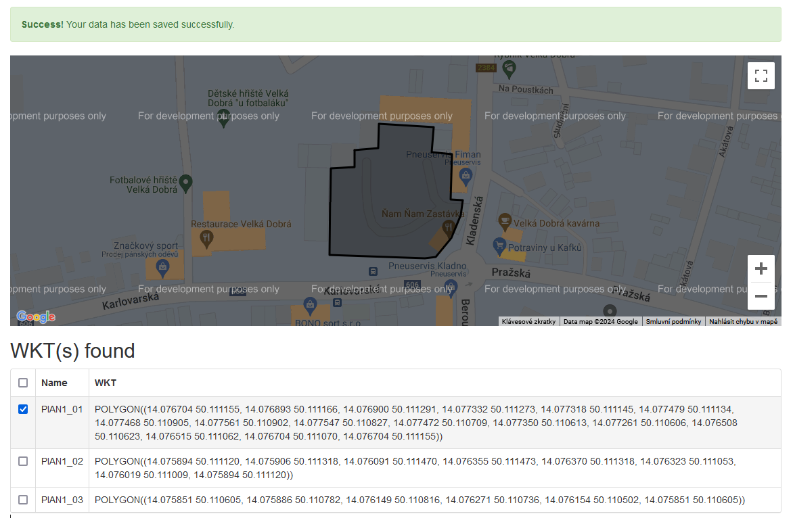
- Přípravu cílového CSV souboru lze provést např. v tabulkovém editoru Libre Office Calc:
- otevřít nový soubor;
- do prvního řádku vložit názvy polí podle definice na začátku tohoto návodu (
label,epsg,geometry);- do pole
labelzkopírujeme či přepíšeme název zvolené geometrie/geometrií (např. plocha 1, sonda 1 atp.), případně je možné zkopírovat celou tabulku z převodníku a následně upravit názvy polí a přidat sloupecepsg; - do pole
epsgzapíšeme kód souřadnicového systému (4326 nebo 5514); - do pole
geometryzkopírujeme souřadnice WKT z totožného pole v převodníku.
- do pole
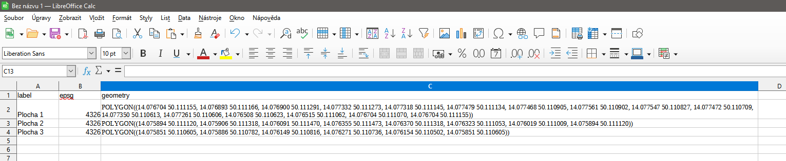
- Připravený soubor uložte ve formátu CSV:
Soubor–Uložit jako–Text CSV (.csv);- pokud vyskočí upozornění na kontrolu správného formátu, které nabízí možnost uložit jako ODF potvrdíme, že správně je CSV (
Použít formát Text CSV);
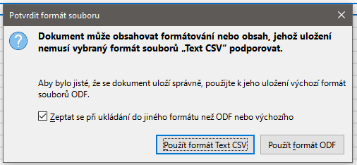 - v následujícím dialogovém okně pro export nastavíme tyto parametry:
- Znaková sada:
Unicode (UTF-8); - Oddělovač pole:
,(čárka); - Oddělovač řetězců:
"(horní uvozovky);
- Znaková sada:
- volbu potvrdíme tlačítkem
OK.
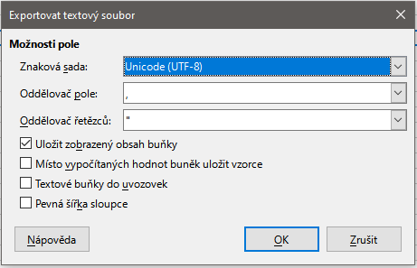
Vytvoření CSV v textovém editoru
Alternativním postupem vytvoření CSV souboru je jeho vytvoření v textovém editoru (např. Poznámkový blok, WordPad, Notepad++ atp.). Viz vzorový CSV soubor.
- Otevřete textový editor (ukázka je v Poznámkovém bloku, ale stejně funguje i v ostatních zmíněných programech).
- Na první řádek vložte názvy polí oddělené čárkou podle definice výše:
"label","epsg","geometry".
- Na druhý řádek (případně na další řádky podle počtu geometrií k importu) vložte hodnoty pro tato pole opět oddělená čárkou.
Výsledný soubor může vypadat např. takto:
PIAN_1.csv
"label","epsg","geometry"
"plocha_1","4326","POLYGON ((14.076704183062645 50.11115525776103, 14.076893350212458 50.111165965335545, 14.076900488595527 50.11129088703842, 14.077332360768025 50.111273041080835, 14.077318084002115 50.11114455018662, 14.077478697619995 50.11113384261205, 14.07746799004542 50.1109054143555, 14.07756078902463 50.110901845163994, 14.07754651225872 50.1108268921422, 14.077471559236983 50.11070910882239, 14.077350206725612 50.11061274065173, 14.077260976937964 50.11060560226866, 14.076507877529536 50.110623448226306, 14.076515015912605 50.11106245878182, 14.076704183062645 50.111069597164885, 14.076704183062645 50.11115525776103))"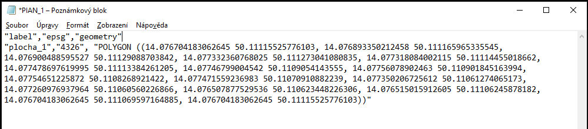
- Připravený soubor uložte ve formátu CSV.
- Při ukládání textového dokumentu v operačním systému Windows je třeba ručně dopsat k názvu souboru jako jeho koncovku .csv.
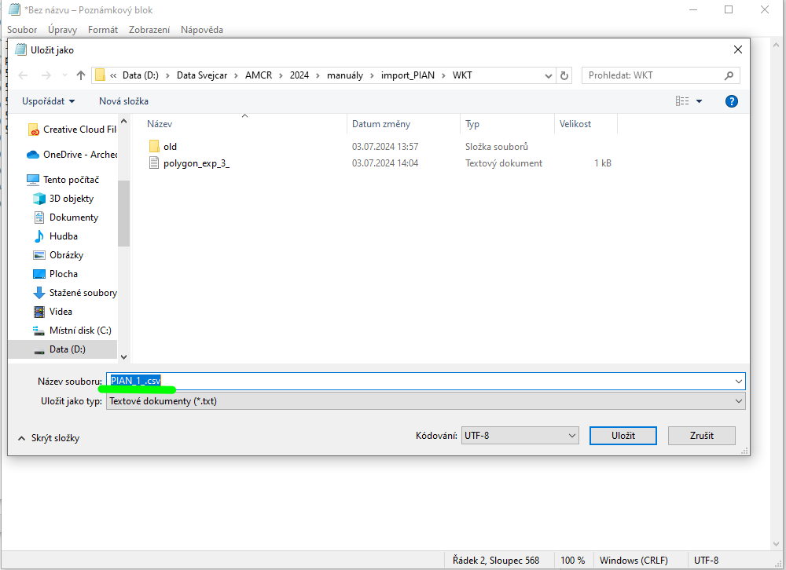
Export CSV z QGIS
- V QGIS si otevřeme vektorovou vrstvu, která obsahuje jednu či více geometrií jako podklad pro PIAN (souřadnicový systém WGS 84 – EPSG:4326 nebo S-JTSK / Krovak East North – EPSG: 5514).
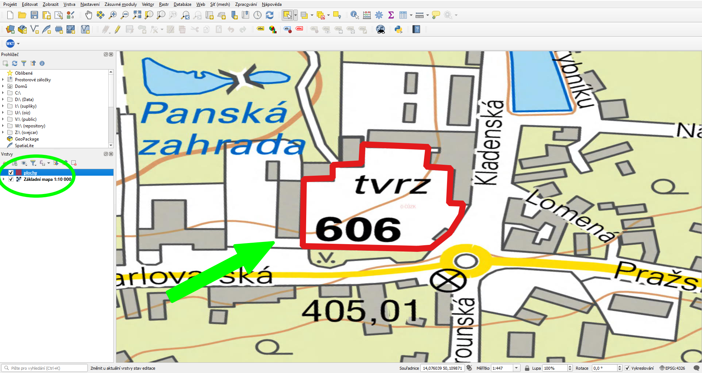
- Vrstvu exportujeme jako WKT:
- kliknout pravým tlačítkem na vrstvu v seznamu vrstev –
Export–Uložit prvky jako...;
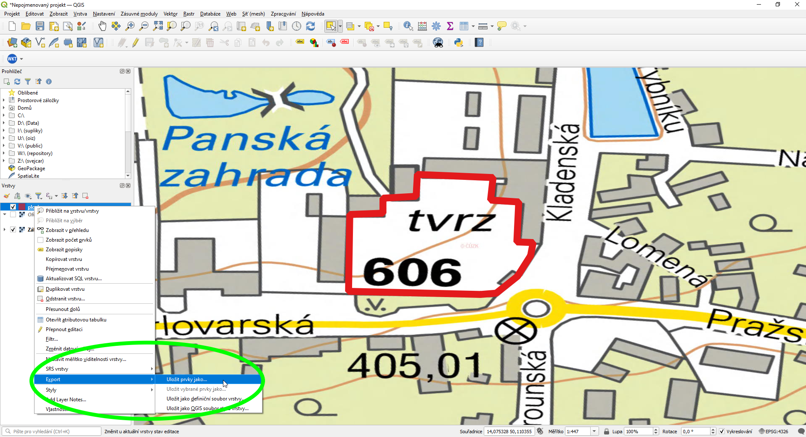 - v nastavení exportu zvolíme:
- typ geometrie (GEOMETRY):
AS_WKT; - oddělovač (SEPARATOR):
COMMA; - kódování/encoding:
UTF-8; - souřadnicový systém (SRS):
WGS 84 - EPSG:4326neboS-JTSK / Krovak East North - EPSG: 5514.
- typ geometrie (GEOMETRY):
- kliknout pravým tlačítkem na vrstvu v seznamu vrstev –
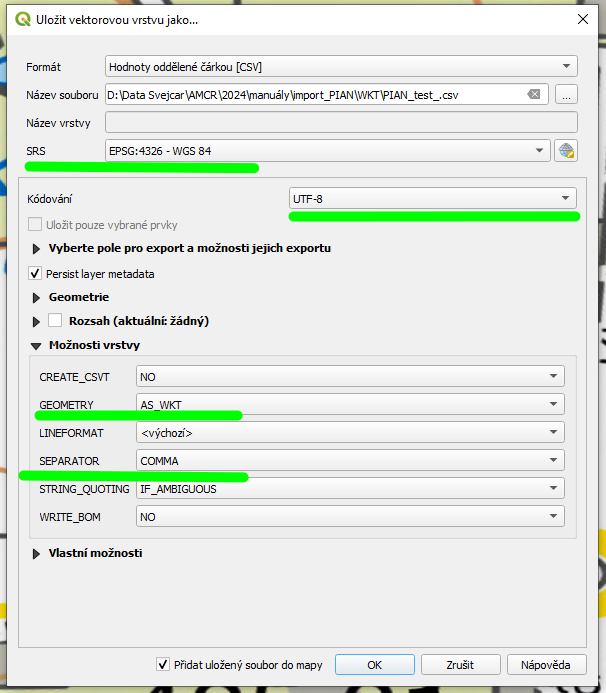
- QGIS nám nabídne přidat vrstvy do mapy – lze přijmout (vrstva se přidá do seznamu vrstev) nebo ne (vrstva se nepřidá).
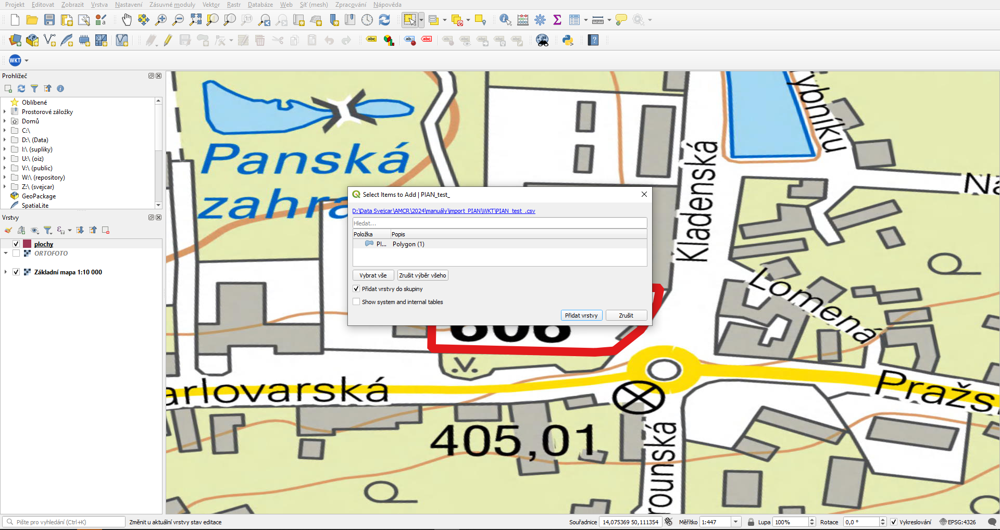
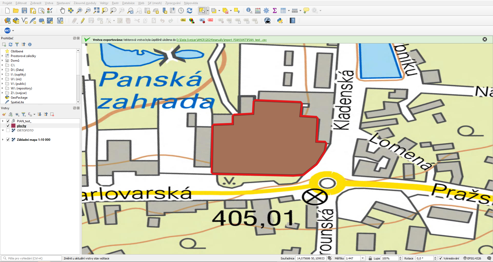
- Výsledný soubor otevřeme např. v Libre Office, v úvodním nastavení importu textu nastavíme/zkontrolujeme následující hodnoty:
- Znaková sada:
Unicode (UTF-8); - Možnosti oddělovače – Odděleno pomocí:
Čárka; - Oddělovač řetězců:
"; - ve spodní části okna pak vidíme náhled importovaných dat.
- Znaková sada:
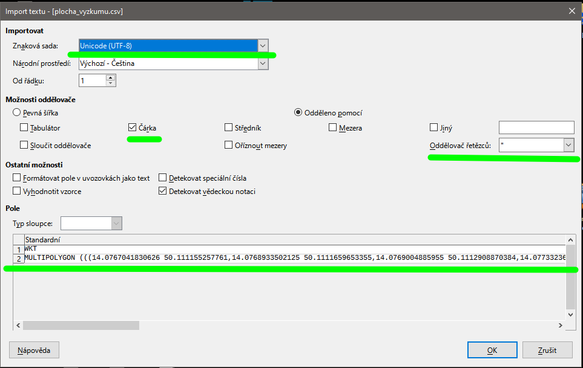
- Z původních dat nás zajímá především pole s geometrií WKT a případně pole s názvem jednotlivých geometrií/PIAN, data je třeba upravit do požadovaného formátu (viz výše):
- vytvořit pole
labeljako první sloupec (vložením nebo úpravou a přesunem stávajícího pole na první místo); - vytvořit pole
epsgpro kód souřadnicového systému ve druhém sloupci; - pole
WKTpřejmenovat nageometry(třetí sloupec).
- vytvořit pole
- Výsledek uložíme jako soubor CSV
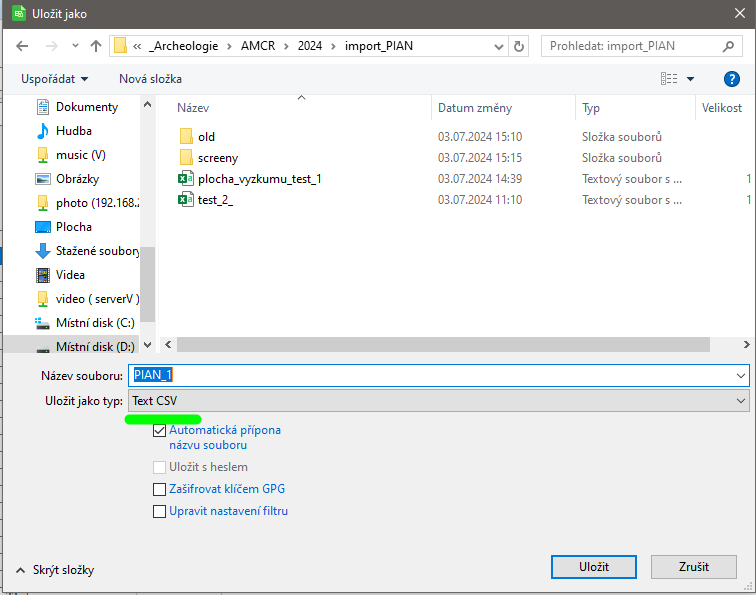
Import souboru CSV do AMČR
- V AMČR u vybrané dokumentační jednotky (DJ) zvolíme tlačítkem
Další volby(+) možnostPIAN – importovat.
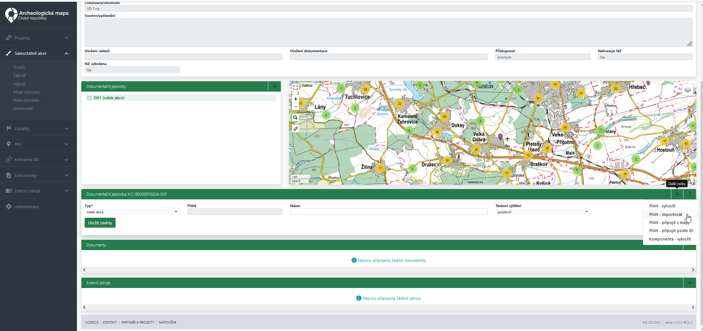
- Otevře se dialogové okno
Importovat PIAN, sem přetáhneme/nebo zvolíme připravený CSV soubor.
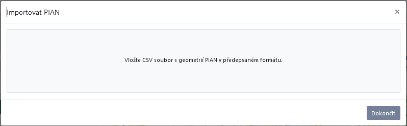
- Systém automaticky provede validaci nahrávaného souboru i geometrií, které obsahuje. Zvolíme vybranou geometrii kliknutím ve sloupci
IDpro vytvoření PIAN.
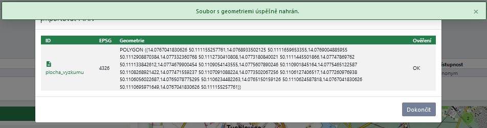
- V mapě se nám zobrazí importovaná geometrie – můžeme ji potvrdit, nebo ji případně dále editovat pomocí standardních nástrojů pro editaci PIAN dostupných v mapovém rozhraní AMČR.
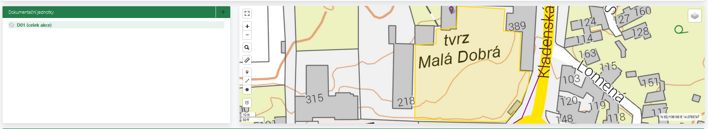
Úprava CSV v MS Excel není vhodná. Pokud CSV soubor ukládáme v Excelu (stačí i otevření a uložení původně validního souboru), tak program automaticky doplní další uvozovky k polím s textovými řetězci (např. ““POLYGON““) což způsobí nečitelnost souboru – lze ověřit např. při zobrazení v Notepad++ (nebo jiném textovém editoru – např. i v poznámkovém bloku) a zde i nadbytečné uvozovky odmazat.